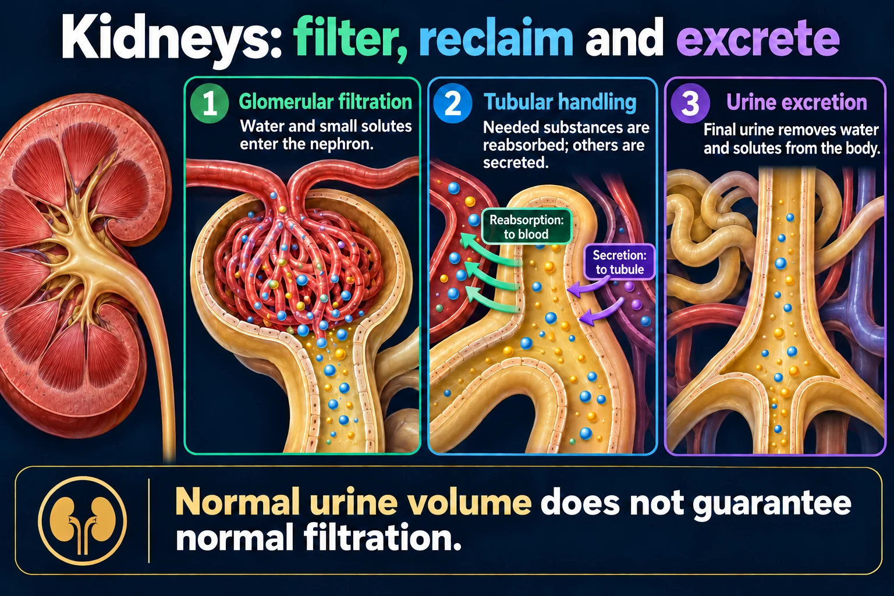

Renal Anatomy & Physiology — the nephron, top to bottom
The kidneys work like 2 washing machines 🌀 — they wash the blood of waste by filtration, regulate fluid volume by reabsorption, and stimulate red blood cell production by making erythropoietin. Every renal disease on your exam is one of those three jobs breaking.
📄 Simple Nursing original — opens in Drive →
You cannot reason about renal failure until you can point to the piece that broke — so learn the map first.
Blood comes in through the renal artery, gets scrubbed in the cortex, the waste water drains down the pyramids into the calyces and renal pelvis, and leaves as urine down the ureter. Cortex filters · medulla concentrates · pelvis collects.

Normal urine volume does not guarantee normal filtration.
Glomerular filtration
Water and small solutes enter the nephron.
Tubular handling
Needed substances are reabsorbed; others are secreted.
Urine excretion
Final urine removes water and solutes from the body.
Balance
Kidneys regulate fluid, electrolytes and acid–base status.
Hormonal roles
Renin, erythropoietin and vitamin D activation support other systems.
Assessment
Urine output, urinalysis, creatinine and estimated filtration provide different information.
HIGH YIELD Learn this and you get diuretics, electrolytes and renal failure for free. Each segment moves a different thing, so each one has its own drug and its own lab.
Three phases make urine — and seven jobs make you alive. Say them out loud.
Q: What are the three phases of urine formation? A: Filtration, reabsorption, and secretion.
And the three things filtration is supposed to dump:
ADH is made in the hypothalamus, stored in the posterior pituitary, and works on the collecting duct. More ADH = more water pulled back into the blood = less urine, darker and more concentrated.
Why it matters: a failing kidney thinks it is dry even when the body is drowning, so it keeps firing RAAS — that's why renal patients are hypertensive and fluid-overloaded at the same time.
Four numbers tell you how a kidney is doing. Learn the bars, not the paragraphs.
| Lab | Normal (adult) | If it's HIGH, think… |
|---|---|---|
| GFR | >90 mL/min | LOW is the bad direction — <60 for 3 months = CKD |
| Creatinine | 0.6–1.2 mg/dL | Kidney damage — >1.3 = bad kidney |
| BUN | 10–20 mg/dL | Dehydration, GI bleed, high protein, kidney |
| BUN : Creatinine | 10:1 – 20:1 | >20:1 = pre-renal (dry) 💧 |
| Potassium | 3.5–5.0 mEq/L | Kidney can't excrete K⁺ → cardiac arrest risk 🚨 |
| Urine output | ≥30 mL/hr | LOW is bad — oliguria = kidneys in distress |
Half-life = the time it takes for half of the medication to be eliminated from the body.
Bad kidney = long half-life = drug stacks up. That is why renally-cleared drugs get dose reductions in CKD.
Never give an NSAID to a client in acute kidney injury — it constricts the afferent arteriole and drops the GFR further.
✅ Do instead: hydrate before and after contrast, check creatinine & GFR before nephrotoxic drugs, monitor strict I&O and daily weights (1 kg = 1 L).
Saved study graphics from your own collection. Each one is someone else’s work — check anything clinical against your course materials before you rely on it.